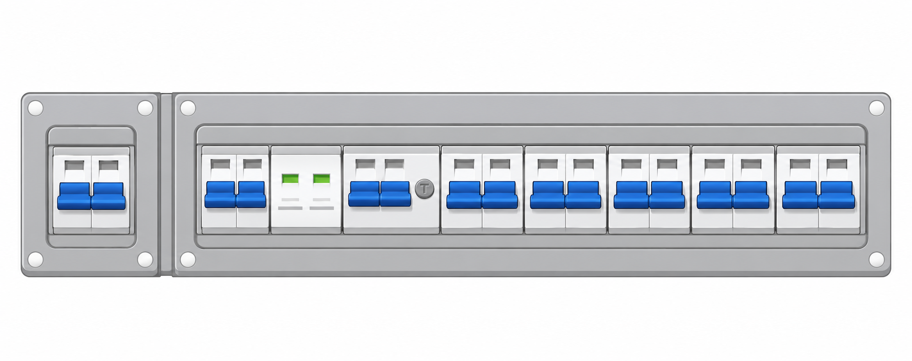
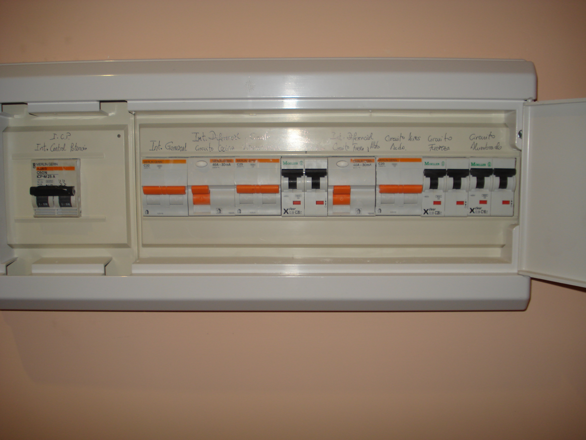

F20 · Desciframos el cuadro eléctrico
UD1 · Mi tienda sostenible de reparación informática
Objetivo. Reconocer las protecciones de una vivienda y explicar qué hace cada una.
Necesitas: lápiz. Observa el esquema y la imagen; no abras ni manipules instalaciones reales.
1. Observa las siglas y los amperajes. 2. Completa el nombre y la función de cada elemento.

C2 Tomas de uso general y frigorífico
C3 Cocina y horno
C4 Lavadora, lavavajillas y termo eléctrico
C5 Tomas de baño y auxiliares de cocina
1. Escribe el nombre y la función de cada protección
Comprueba: he escrito cinco nombres, cinco funciones y he leído los circuitos C1-C5.
F20 · Del esquema a un cuadro de vivienda
UD1 · Mi tienda sostenible de reparación informática
3. Observa la imagen. Localiza los aparatos que se parecen a los del esquema.
4. Completa los nueve códigos P1-P9: anota qué ves y qué hace cada aparato.

25 AP132 AP240 AP325 AP420 AP540 AP620 AP720 AP816 AP9Cuadro de una vivienda: observa qué protecciones y valores aparecen realmente.
2. Describe lo que ves y explica para qué sirve
| Código | Qué ves / qué valor pone | Qué hace |
|---|---|---|
| P1 | ||
| P2 | ||
| P3 | ||
| P4 | ||
| P5 | ||
| P6 | ||
| P7 | ||
| P8 | ||
| P9 |
Si te atascas: vuelve a mirar las siglas del anverso; señala la duda para preguntarla después.
Revisa que has descrito lo visible y explicado la función, sin suponer datos que no aparecen.